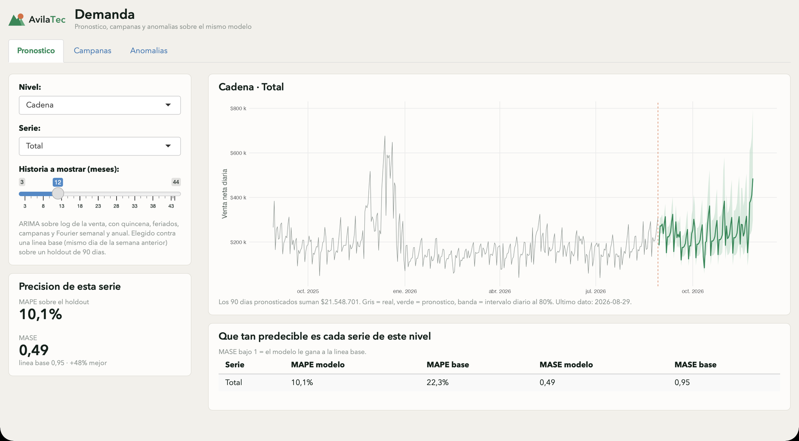

Portafolio
Análisis que termina en una decisión, no en un gráfico bonito.
Dos casos construidos de punta a punta sobre AvilaTec, una cadena ficticia de retail tecnológico en Venezuela: 1,6 millones de líneas de factura, 44 meses y el tipo de cambio real del BCV. Del modelo de datos al tablero, y del tablero al pronóstico.
- Líneas de factura
- 1.609.748
- Período cubierto
- 44meses, ene 2023 → ago 2026
- Series pronosticadas
- 26cadena, tiendas y categorías
- Error del pronóstico
- 10,1% MAPE · 48% menos que la línea base
Proyectos
Dos piezas del mismo sistema
El tablero responde qué pasó y el pronóstico qué viene. Comparten modelo de datos, paleta y criterio: cada número que aparece está medido contra una alternativa, no elegido porque se veía bien.

AvilaTec · Tableau
Tablero Comercial
Cuatro pestañas sobre 1,6 M de líneas: venta y margen, mezcla, cobranza y
devoluciones. El workbook está generado por código — el
.twb es XML y se escribe entero desde Python.
- Tableau
- Hyper
- Python
- SQL

AvilaTec · R
Pronóstico de demanda
26 series diarias con ARIMA sobre log(venta), calendario venezolano
como regresor y detección de anomalías del mismo ajuste. Gana a la línea base en
23 de 26 series.
- R
- fable
- ARIMA
- Shiny
El dataset
AvilaTec no existe. El tipo de cambio, sí.
15 tiendas en Caracas, Lechería, Valencia, Maracaibo y Barquisimeto, más el canal online. Precios de referencia en dólares y cobro en bolívares a la tasa del día: el problema real del retail venezolano.
Las ventas son sintéticas y reproducibles a partir de una semilla fija. La serie de tipo de cambio es real, descargada de los archivos trimestrales que publica el Banco Central de Venezuela. Eso obliga a que el análisis se enfrente a la devaluación de verdad, no a una curva suave inventada.
| Fecha | Bs./US$ |
|---|---|
| 31 dic 2023 | 35,93 |
| 31 dic 2024 | 51,93 |
| 31 dic 2025 | 298,14 |
| 29 ago 2026 | 791,67 |
45× en tres años y ocho meses. Cualquier serie en bolívares hay que deflactarla antes de compararla consigo misma.
Método
Tres reglas que se ven en los dos casos
Medir antes de construir
Tres análisis atractivos se descartaron con números antes de escribir una línea: reglas de asociación (el 57% de las facturas tiene una sola línea), predicción de devoluciones (tasa base 2,44% y ninguna variable mueve la aguja) y el efecto del tipo de cambio sobre la mezcla de moneda (correlación +0,043 en 44 meses).
Siempre hay línea base
Un modelo sin comparación no se puede juzgar. Aquí la referencia es SNAIVE — el mismo día de la semana anterior. Una de las variantes probadas resultó peor que no hacer nada, y eso solo se ve si la línea base está en la tabla.
El diseño es parte del análisis
La paleta se derivó en OKLCH y se validó bajo protanopia y deuteranopia; los años van en rampa porque son ordinales; el signo de una variación lo lleva la dirección de la barra y no un segundo color. Un tablero que se lee mal es un análisis que no llegó.
Contacto
¿Hablamos de tus datos?
Los dos casos de arriba están completos y son reproducibles: código, datos y documentación.